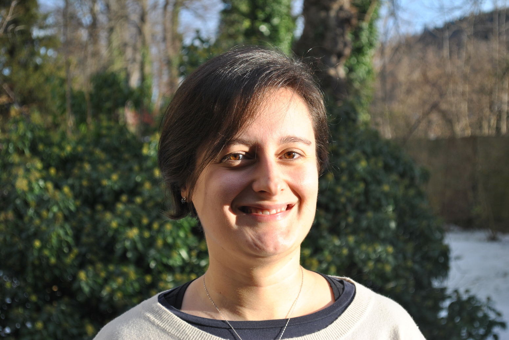

Francesca
Bonizzoni
Associate Professor
I am currently employed at the Politecnico di Milano as Associate Professor.
Research interests
- Numerical analysis and numerical methods for PDEs.
- Finite element method and Finite element exterior calculus.
- PDEs with stochastic data and Uncertainty Quantification.
- Model Order Reduction for time-harmonic wave equations.
- Structure-preserving numerical techniques for non-linear PDEs.
Upcoming events
-
July 12-16, 2021. Talk at the Workshop on "Discretization of Differential Complexes" part of theESI Thematic Period "Differential Complexes: Theory, Discretization, and Applications", Vienna, Austria.
-
July 12-16, 2021. Talk in the Minisymposium "N01 - New methods and techniques for the approximation of PDEs" atEquadiff 2026, Prague, Czech Republic.
-
July 19-24, 2026. Minisymposium "Multifidelity and Multilevel Surrogates in Uncertainty Quantification" atWCCM - ECCOMAS 2026, Munich, Germany.
-
July 12-16, 2021. Talk in the Minisymposium "MS222 - Polytopal Methods in Mechanics: bridging Mathematics and Engineering" atWCCM - ECCOMAS 2026, Munich, Germany.